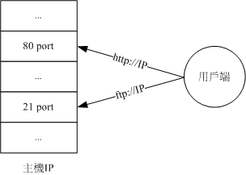

17.2 通过 systemctl 管理服务
基本上， systemd 这个启动服务的机制，主要是通过一只名为 systemctl 的指令来处理的！跟以前 systemV 需要 service / chkconfig / setup / init 等指令来协助不同， systemd 就是仅有 systemctl 这个指令来处理而已呦！所以全部的行为都得要使用 systemctl 的意思啦！有没有很难？其实习惯了之后， 鸟哥是觉得 systemctl 还挺好用的！ ^_^
17.2.1 通过 systemctl 管理单一服务 （service unit） 的启动/开机启动与观察状态
在开始这个小节之前，鸟哥要先来跟大家报告一下，那就是：一般来说，服务的启动有两个阶段，一个是“开机的时候设置要不要启动这个服务”， 以及“你现在要不要启动这个服务”，这两者之间有很大的差异喔！举个例子来说，假如我们现在要“立刻取消 atd 这个服务”时，正规的方法 （不要用 kill） 要怎么处理？
[root@study ~]# systemctl [command] [unit]
command 主要有：
start ：立刻启动后面接的 unit
stop ：立刻关闭后面接的 unit
restart ：立刻关闭后启动后面接的 unit，亦即执行 stop 再 start 的意思
reload ：不关闭后面接的 unit 的情况下，重新载入配置文件，让设置生效
enable ：设置下次开机时，后面接的 unit 会被启动
disable ：设置下次开机时，后面接的 unit 不会被启动
status ：目前后面接的这个 unit 的状态，会列出有没有正在执行、开机默认执行否、登录等信息等！
is-active ：目前有没有正在运行中
is-enable ：开机时有没有默认要启用这个 unit
范例一：看看目前 atd 这个服务的状态为何？
[root@study ~]# systemctl status atd.service
atd.service - Job spooling tools
Loaded: loaded （/usr/lib/systemd/system/atd.service; enabled）
Active: active （running） since Mon 2015-08-10 19:17:09 CST; 5h 42min ago
Main PID: 1350 （atd）
CGroup: /system.slice/atd.service
└─1350 /usr/sbin/atd -f
Aug 10 19:17:09 study.centos.vbird systemd[1]: Started Job spooling tools.
# 重点在第二、三行喔～
# Loaded：这行在说明，开机的时候这个 unit 会不会启动，enabled 为开机启动，disabled 开机不会启动
# Active：现在这个 unit 的状态是正在执行 （running） 或没有执行 （dead）
# 后面几行则是说明这个 unit 程序的 PID 状态以及最后一行显示这个服务的登录文件信息！
# 登录文件信息格式为：“时间” “讯息发送主机” “哪一个服务的讯息” “实际讯息内容”
# 所以上面的显示讯息是：这个 atd 默认开机就启动，而且现在正在运行的意思！
范例二：正常关闭这个 atd 服务
[root@study ~]# systemctl stop atd.service
[root@study ~]# systemctl status atd.service
atd.service - Job spooling tools
Loaded: loaded （/usr/lib/systemd/system/atd.service; enabled）
Active: inactive （dead） since Tue 2015-08-11 01:04:55 CST; 4s ago
Process: 1350 ExecStart=/usr/sbin/atd -f $OPTS （code=exited, status=0/SUCCESS）
Main PID: 1350 （code=exited, status=0/SUCCESS）
Aug 10 19:17:09 study.centos.vbird systemd[1]: Started Job spooling tools.
Aug 11 01:04:55 study.centos.vbird systemd[1]: Stopping Job spooling tools...
Aug 11 01:04:55 study.centos.vbird systemd[1]: Stopped Job spooling tools.
# 目前这个 unit 下次开机还是会启动，但是现在是没在运行的状态中！同时，
# 最后两行为新增加的登录讯息，告诉我们目前的系统状态喔！
上面的范例中，我们已经关掉了 atd 啰！这样作才是对的！不应该使用 kill 的方式来关掉一个正常的服务喔！否则 systemctl 会无法继续监控该服务的！ 那就比较麻烦。而使用 systemtctl status atd 的输出结果中，第 2, 3 两行很重要～因为那个是告知我们该 unit 下次开机会不会默认启动，以及目前启动的状态！ 相当重要！最下面是这个 unit 的登录文件～如果你的这个 unit 曾经出错过，观察这个地方也是相当重要的！
那么现在问个问题，你的 atd 现在是关闭的，未来重新开机后，这个服务会不会再次的启动呢？答案是？当然会！ 因为上面出现的第二行中，它是 enabled 的啊！这样理解所谓的“现在的状态”跟“开机时默认的状态”两者的差异了吗？
好！再回到 systemctl status atd.service 的第三行，不是有个 Active 的 daemon 现在状态吗？除了 running 跟 dead 之外， 有没有其他的状态呢？有的～基本上有几个常见的状态：
- active （running）：正有一只或多只程序正在系统中执行的意思，举例来说，正在执行中的 vsftpd 就是这种模式。
- active （exited）：仅执行一次就正常结束的服务，目前并没有任何程序在系统中执行。 举例来说，开机或者是挂载时才会进行一次的 quotaon 功能，就是这种模式！ quotaon 不须一直执行～只须执行一次之后，就交给文件系统去自行处理啰！通常用 bash shell 写的小型服务，大多是属于这种类型 （无须常驻内存）。
- active （waiting）：正在执行当中，不过还再等待其他的事件才能继续处理。举例来说，打印的伫列相关服务就是这种状态！ 虽然正在启动中，不过，也需要真的有伫列进来 （打印工作） 这样他才会继续唤醒打印机服务来进行下一步打印的功能。
- inactive：这个服务目前没有运行的意思。
既然 daemon 目前的状态就有这么多种了，那么 daemon 的默认状态有没有可能除了 enable/disable 之外，还有其他的情况呢？当然有！
- enabled：这个 daemon 将在开机时被执行
- disabled：这个 daemon 在开机时不会被执行
- static：这个 daemon 不可以自己启动 （enable 不可），不过可能会被其他的 enabled 的服务来唤醒 （相依属性的服务）
mask：这个 daemon 无论如何都无法被启动！因为已经被强制注销 （非删除）。可通过 systemctl unmask 方式改回原本状态
服务启动/关闭与观察的练习
问题：找到系统中名为 chronyd 的服务，观察此服务的状态，观察完毕后，将此服务设置为： 1）开机不会启动 2）现在状况是关闭的情况！回答：我们直接使用指令的方式来查询与设置看看：
# 1\. 观察一下状态，确认是否为关闭/未启动呢？
[root@study ~]# systemctl status chronyd.service
hronyd.service - NTP client/server
Loaded: loaded （/usr/lib/systemd/system/chronyd.service; enabled）
Active: active （running） since Mon 2015-08-10 19:17:07 CST; 24h ago
.....（下面省略）.....
# 2\. 由上面知道目前是启动的，因此立刻将他关闭，同时开机不会启动才行！
[root@study ~]# systemctl stop chronyd.service
[root@study ~]# systemctl disable chronyd.service
rm '/etc/systemd/system/multi-user.target.wants/chronyd.service'
# 看得很清楚～其实就是从 /etc/systemd/system 下面删除一条链接文件而已～
[root@study ~]# systemctl status chronyd.service
chronyd.service - NTP client/server
Loaded: loaded （/usr/lib/systemd/system/chronyd.service; disabled）
Active: inactive （dead）
# 如此则将 chronyd 这个服务完整的关闭了！
上面是一个很简单的练习，你先不要知道 chronyd 是啥东西，只要知道通过这个方式，可以将一个服务关闭就是了！好！那再来一个练习， 看看有没有问题呢？
问题：因为我根本没有打印机安装在服务器上，目前也没有网络打印机，因此我想要将 cups 服务整个关闭，是否可以呢？回答：同样的，眼见为凭，我们就动手作看看：
# 1\. 先看看 cups 的服务是开还是关？
[root@study ~]# systemctl status cups.service
cups.service - CUPS Printing Service
Loaded: loaded （/usr/lib/systemd/system/cups.service; enabled）
Active: inactive （dead） since Tue 2015-08-11 19:19:20 CST; 3h 29min ago
# 有趣得很！竟然是 enable 但是却是 inactive 耶！相当特别！
# 2\. 那就直接关闭，同时确认没有启动喔！
[root@study ~]# systemctl stop cups.service
[root@study ~]# systemctl disable cups.service
rm '/etc/systemd/system/multi-user.target.wants/cups.path'
rm '/etc/systemd/system/sockets.target.wants/cups.socket'
rm '/etc/systemd/system/printer.target.wants/cups.service'
# 也是非常特别！竟然一口气取消掉三个链接文件！也就是说，这三个文件可能是有相依性的问题喔！
[root@study ~]# netstat -tlunp | grep cups
# 现在应该不会出现任何数据！因为根本没有 cups 的任务在执行当中～所以不会有 port 产生
# 3\. 尝试启动 cups.socket 监听用户端的需求喔！
[root@study ~]# systemctl start cups.socket
[root@study ~]# systemctl status cups.service cups.socket cups.path
cups.service - CUPS Printing Service
Loaded: loaded （/usr/lib/systemd/system/cups.service; disabled）
Active: inactive （dead） since Tue 2015-08-11 22:57:50 CST; 3min 41s ago
cups.socket - CUPS Printing Service Sockets
Loaded: loaded （/usr/lib/systemd/system/cups.socket; disabled）
Active: active （listening） since Tue 2015-08-11 22:56:14 CST; 5min ago
cups.path - CUPS Printer Service Spool
Loaded: loaded （/usr/lib/systemd/system/cups.path; disabled）
Active: inactive （dead）
# 确定仅有 cups.socket 在启动，其他的并没有启动的状态！
# 4\. 尝试使用 lp 这个指令来打印看看？
[root@study ~]# echo "testing" | lp
lp: Error - no default destination available. # 实际上就是没有打印机！所以有错误也没关系！
[root@study ~]# systemctl status cups.service
cups.service - CUPS Printing Service
Loaded: loaded （/usr/lib/systemd/system/cups.service; disabled）
Active: active （running） since Tue 2015-08-11 23:03:18 CST; 34s ago
[root@study ~]# netstat -tlunp | grep cups
tcp 0 0 127.0.0.1:631 0.0.0.0:* LISTEN 25881/cupsd
tcp6 0 0 ::1:631 :::* LISTEN 25881/cupsd
# 见鬼！竟然 cups 自动被启动了！明明我们都没有驱动他啊！怎么回事啊？
上面这个范例的练习在让您了解一下，很多服务彼此之间是有相依性的！cups 是一种打印服务，这个打印服务会启用 port 631 来提供网络打印机的打印功能。 但是其实我们无须一直启动 631 端口吧？因此，多了一个名为 cups.socket 的服务，这个服务可以在“用户有需要打印时，才会主动唤醒 cups.service ”的意思！ 因此，如果你仅是 disable/stop cups.service 而忘记了其他两个服务的话，那么当有用户向其他两个 cups.path, cups.socket 提出要求时， cups.service 就会被唤醒！所以，你关掉也没用！
- 强迫服务注销 （mask） 的练习
比较正规的作法是，要关闭 cups.service 时，连同其他两个会唤醒 service 的 cups.socket 与 cups.path 通通关闭，那就没事了！ 比较不正规的作法是，那就强迫 cups.service 注销吧！通过 mask 的方式来将这个服务注销看看！
# 1\. 保持刚刚的状态，关闭 cups.service，启动 cups.socket，然后注销 cups.servcie
[root@study ~]# systemctl stop cups.service
[root@study ~]# systemctl mask cups.service
ln -s '/dev/null' '/etc/systemd/system/cups.service'
# 喔耶～其实这个 mask 注销的动作，只是让启动的脚本变成空的设备而已！
[root@study ~]# systemctl status cups.service
cups.service
Loaded: masked （/dev/null）
Active: inactive （dead） since Tue 2015-08-11 23:14:16 CST; 52s ago
[root@study ~]# systemctl start cups.service
Failed to issue method call: Unit cups.service is masked. # 再也无法唤醒！
上面的范例你可以仔细推敲一下～原来整个启动的脚本配置文件被链接到 /dev/null 这个空设备～因此，无论如何你是再也无法启动这个 cups.service 了！ 通过这个 mask 功能，你就可以不必管其他相依服务可能会启动到这个想要关闭的服务了！虽然是非正规，不过很有效！ ^_^
那如何取消注销呢？当然就是 unmask 即可啊！
[root@study ~]# systemctl unmask cups.service
rm '/etc/systemd/system/cups.service'
[root@study ~]# systemctl status cups.service
cups.service - CUPS Printing Service
Loaded: loaded （/usr/lib/systemd/system/cups.service; disabled）
Active: inactive （dead） since Tue 2015-08-11 23:14:16 CST; 4min 35s ago
# 好佳在有恢复正常！
17.2.2 通过 systemctl 观察系统上所有的服务
上一小节谈到的是单一服务的启动/关闭/观察，以及相依服务要注销的功能。那系统上面有多少的服务存在呢？这个时候就得要通过 list-units 及 list-unit-files 来观察了！ 细部的用法如下：
[root@study ~]# systemctl [command] [--type=TYPE] [--all]
command:
list-units ：依据 unit 列出目前有启动的 unit。若加上 --all 才会列出没启动的。
list-unit-files ：依据 /usr/lib/systemd/system/ 内的文件，将所有文件列表说明。
--type=TYPE：就是之前提到的 unit type，主要有 service, socket, target 等
范例一：列出系统上面有启动的 unit
[root@study ~]# systemctl
UNIT LOAD ACTIVE SUB DESCRIPTION
proc-sys-fs-binfmt_mis... loaded active waiting Arbitrary Executable File Formats File System
sys-devices-pc...:0:1:... loaded active plugged QEMU_HARDDISK
sys-devices-pc...0:1-0... loaded active plugged QEMU_HARDDISK
sys-devices-pc...0:0-1... loaded active plugged QEMU_DVD-ROM
.....（中间省略）.....
vsftpd.service loaded active running Vsftpd ftp daemon
.....（中间省略）.....
cups.socket loaded failed failed CUPS Printing Service Sockets
.....（中间省略）.....
LOAD = Reflects whether the unit definition was properly loaded.
ACTIVE = The high-level unit activation state, i.e. generalization of SUB.
SUB = The low-level unit activation state, values depend on unit type.
141 loaded units listed. Pass --all to see loaded but inactive units, too.
To show all installed unit files use 'systemctl list-unit-files'.
# 列出的项目中，主要的意义是：
# UNIT ：项目的名称，包括各个 unit 的类别 （看扩展名）
# LOAD ：开机时是否会被载入，默认 systemctl 显示的是有载入的项目而已喔！
# ACTIVE ：目前的状态，须与后续的 SUB 搭配！就是我们用 systemctl status 观察时，active 的项目！
# DESCRIPTION ：详细描述啰
# cups 比较有趣，因为刚刚被我们玩过，所以 ACTIVE 竟然是 failed 的喔！被玩死了！ ^_^
# 另外，systemctl 都不加参数，其实默认就是 list-units 的意思！
范例二：列出所有已经安装的 unit 有哪些？
[root@study ~]# systemctl list-unit-files
UNIT FILE STATE
proc-sys-fs-binfmt_misc.automount static
dev-hugepages.mount static
dev-mqueue.mount static
proc-fs-nfsd.mount static
.....（中间省略）.....
systemd-tmpfiles-clean.timer static
336 unit files listed.
使用 systemctl list-unit-files 会将系统上所有的服务通通列出来～而不像 list-units 仅以 unit 分类作大致的说明。 至于 STATE 状态就是前两个小节谈到的开机是否会载入的那个状态项目啰！主要有 enabled / disabled / mask / static 等等。
假设我不想要知道这么多的 unit 项目，我只想要知道 service 这种类别的 daemon 而已，而且不论是否已经启动，通通要列出来！ 那该如何是好？
[root@study ~]# systemctl list-units --type=service --all
# 只剩下 *.service 的项目才会出现喔！
范例一：查询系统上是否有以 cpu 为名的服务？
[root@study ~]# systemctl list-units --type=service --all | grep cpu
cpupower.service loaded inactive dead Configure CPU power related settings
# 确实有喔！可以改变 CPU 电源管理机制的服务哩！
17.2.3 通过 systemctl 管理不同的操作环境 （target unit）
通过上个小节我们知道系统上所有的 systemd 的 unit 观察的方式，那么可否列出跟操作界面比较有关的 target 项目呢？ 很简单啊！就这样搞一下：
[root@study ~]# systemctl list-units --type=target --all
UNIT LOAD ACTIVE SUB DESCRIPTION
basic.target loaded active active Basic System
cryptsetup.target loaded active active Encrypted Volumes
emergency.target loaded inactive dead Emergency Mode
final.target loaded inactive dead Final Step
getty.target loaded active active Login Prompts
graphical.target loaded active active Graphical Interface
local-fs-pre.target loaded active active Local File Systems （Pre）
local-fs.target loaded active active Local File Systems
multi-user.target loaded active active Multi-User System
network-online.target loaded inactive dead Network is Online
network.target loaded active active Network
nss-user-lookup.target loaded inactive dead User and Group Name Lookups
paths.target loaded active active Paths
remote-fs-pre.target loaded active active Remote File Systems （Pre）
remote-fs.target loaded active active Remote File Systems
rescue.target loaded inactive dead Rescue Mode
shutdown.target loaded inactive dead Shutdown
slices.target loaded active active Slices
sockets.target loaded active active Sockets
sound.target loaded active active Sound Card
swap.target loaded active active Swap
sysinit.target loaded active active System Initialization
syslog.target not-found inactive dead syslog.target
time-sync.target loaded inactive dead System Time Synchronized
timers.target loaded active active Timers
umount.target loaded inactive dead Unmount All Filesystems
LOAD = Reflects whether the unit definition was properly loaded.
ACTIVE = The high-level unit activation state, i.e. generalization of SUB.
SUB = The low-level unit activation state, values depend on unit type.
26 loaded units listed.
To show all installed unit files use 'systemctl list-unit-files'.
喔！在我们的 CentOS 7.1 的默认情况下，就有 26 个 target unit 耶！而跟操作界面相关性比较高的 target 主要有下面几个：
- graphical.target：就是文字加上图形界面，这个项目已经包含了下面的 multi-user.target 项目！
- multi-user.target：纯文本模式！
- rescue.target：在无法使用 root 登陆的情况下，systemd 在开机时会多加一个额外的暂时系统，与你原本的系统无关。这时你可以取得 root 的权限来维护你的系统。 但是这是额外系统，因此可能需要动到 chroot 的方式来取得你原有的系统喔！再后续的章节我们再来谈！
- emergency.target：紧急处理系统的错误，还是需要使用 root 登陆的情况，在无法使用 rescue.target 时，可以尝试使用这种模式！
- shutdown.target：就是关机的流程。
- getty.target：可以设置你需要几个 tty 之类的，如果想要降低 tty 的项目，可以修改这个东西的配置文件！
正常的模式是 multi-user.target 以及 graphical.target 两个，救援方面的模式主要是 rescue.target 以及更严重的 emergency.target。 如果要修改可提供登陆的 tty 数量，则修改 getty.target 项目。基本上，我们最常使用的当然就是 multi-user 以及 graphical 啰！ 那么我如何知道目前的模式是哪一种？又得要如何修改呢？下面来玩一玩吧！
[root@study ~]# systemctl [command] [unit.target]
选项与参数：
command:
get-default ：取得目前的 target
set-default ：设置后面接的 target 成为默认的操作模式
isolate ：切换到后面接的模式
范例一：我们的测试机器默认是图形界面，先观察是否真为图形模式，再将默认模式转为文字界面
[root@study ~]# systemctl get-default
graphical.target # 果然是图形界面喔！
[root@study ~]# systemctl set-default multi-user.target
[root@study ~]# systemctl get-default
multi-user.target
范例二：在不重新开机的情况下，将目前的操作环境改为纯文本模式，关掉图形界面
[root@study ~]# systemctl isolate multi-user.target
范例三：若需要重新取得图形界面呢？
[root@study ~]# systemctl isolate graphical.target
要注意，改变 graphical.target 以及 multi-user.target 是通过 isolate 来处理的！鸟哥刚刚接触到 systemd 的时候，在 multi-user.target 环境下转成 graphical.target 时， 可以通过 systemctl start graphical.target 喔！然后鸟哥就以为关闭图形界面即可回到 multi-user.target 的！但使用 systemctl stop graphical.target 却完全不理鸟哥～这才发现错了...在 service 部份用 start/stop/restart 才对，在 target 项目则请使用 isolate （隔离不同的操作模式） 才对！
在正常的切换情况下，使用上述 isolate 的方式即可。不过为了方便起见， systemd 也提供了数个简单的指令给我们切换操作模式之用喔！ 大致上如下所示：
[root@study ~]# systemctl poweroff 系统关机
[root@study ~]# systemctl reboot 重新开机
[root@study ~]# systemctl suspend 进入暂停模式
[root@study ~]# systemctl hibernate 进入休眠模式
[root@study ~]# systemctl rescue 强制进入救援模式
[root@study ~]# systemctl emergency 强制进入紧急救援模式
关机、重新开机、救援与紧急模式这没啥问题，那么什么是暂停与休眠模式呢？
- suspend：暂停模式会将系统的状态数据保存到内存中，然后关闭掉大部分的系统硬件，当然，并没有实际关机喔！ 当使用者按下唤醒机器的按钮，系统数据会重内存中回复，然后重新驱动被大部分关闭的硬件，就开始正常运行！唤醒的速度较快。
- hibernate：休眠模式则是将系统状态保存到硬盘当中，保存完毕后，将计算机关机。当使用者尝试唤醒系统时，系统会开始正常运行， 然后将保存在硬盘中的系统状态恢复回来。因为数据是由硬盘读出，因此唤醒的性能与你的硬盘速度有关。
17.2.4 通过 systemctl 分析各服务之间的相依性
我们在本章一开始谈到 systemd 的时候就有谈到相依性的问题克服，那么，如何追踪某一个 unit 的相依性呢？ 举例来说好了，我们怎么知道 graphical.target 会用到 multi-user.target 呢？那 graphical.target 下面还有哪些东西呢？ 下面我们就来谈一谈：
[root@study ~]# systemctl list-dependencies [unit] [--reverse]
选项与参数：
--reverse ：反向追踪谁使用这个 unit 的意思！
范例一：列出目前的 target 环境下，用到什么特别的 unit
[root@study ~]# systemctl get-default
multi-user.target
[root@study ~]# systemctl list-dependencies
default.target
├─abrt-ccpp.service
├─abrt-oops.service
├─vsftpd.service
├─basic.target
│ ├─alsa-restore.service
│ ├─alsa-state.service
.....（中间省略）.....
│ ├─sockets.target
│ │ ├─avahi-daemon.socket
│ │ ├─dbus.socket
.....（中间省略）.....
│ ├─sysinit.target
│ │ ├─dev-hugepages.mount
│ │ ├─dev-mqueue.mount
.....（中间省略）.....
│ └─timers.target
│ └─systemd-tmpfiles-clean.timer
├─getty.target
│ └─getty@tty1.service
└─remote-fs.target
因为我们前一小节的练习将默认的操作模式变成 multi-user.target 了，因此这边使用 list-dependencies 时，所列出的 default.target 其实是 multi-user.target 的内容啦！根据线条连线的流程，我们也能够知道， multi-user.target 其实还会用到 basic.target + getty.target + remote-fs.target 三大项目， 而 basic.target 又用到了 sockets.target + sysinit.target + timers.target... 等一堆～所以啰，从这边就能够清楚的查询到每种 target 模式下面还有的相依模式。 那么如果要查出谁会用到 multi-user.target 呢？就这么作！
[root@study ~]# systemctl list-dependencies --reverse
default.target
└─graphical.target
reverse 本来就是反向的意思，所以加上这个选项，代表“谁还会用到我的服务”的意思～所以看得出来， multi-user.target 主要是被 graphical.target 所使用喔！ 好～那再来，graphical.target 又使用了多少的服务呢？可以这样看：
[root@study ~]# systemctl list-dependencies graphical.target
graphical.target
├─accounts-daemon.service
├─gdm.service
├─network.service
├─rtkit-daemon.service
├─systemd-update-utmp-runlevel.service
└─multi-user.target
├─abrt-ccpp.service
├─abrt-oops.service
.....（下面省略）.....
所以可以看得出来，graphical.target 就是在 multi-user.target 下面再加上 accounts-daemon, gdm, network, rtkit-deamon, systemd-update-utmp-runlevel 等服务而已！ 这样会看了吗？了解 daemon 之间的相关性也是很重要的喔！出问题时，可以找到正确的服务相依流程！
17.2.5 与 systemd 的 daemon 运行过程相关的目录简介
我们在前几小节曾经谈过比较重要的 systemd 启动脚本配置文件在 /usr/lib/systemd/system/, /etc/systemd/system/ 目录下，那还有哪些目录跟系统的 daemon 运行有关呢？ 基本上是这样的：
- /usr/lib/systemd/system/： 使用 CentOS 官方提供的软件安装后，默认的启动脚本配置文件都放在这里，这里的数据尽量不要修改～ 要修改时，请到 /etc/systemd/system 下面修改较佳！
- /run/systemd/system/： 系统执行过程中所产生的服务脚本，这些脚本的优先序要比 /usr/lib/systemd/system/ 高！
- /etc/systemd/system/： 管理员依据主机系统的需求所创建的执行脚本，其实这个目录有点像以前 /etc/rc.d/rc5.d/Sxx 之类的功能！执行优先序又比 /run/systemd/system/ 高喔！
- /etc/sysconfig/*： 几乎所有的服务都会将初始化的一些选项设置写入到这个目录下，举例来说，mandb 所要更新的 man page 索引中，需要加入的参数就写入到此目录下的 man-db 当中喔！而网络的设置则写在 /etc/sysconfig/network-scripts/ 这个目录内。所以，这个目录内的文件也是挺重要的；
- /var/lib/： 一些会产生数据的服务都会将他的数据写入到 /var/lib/ 目录中。举例来说，数据库管理系统 Mariadb 的数据库默认就是写入 /var/lib/mysql/ 这个目录下啦！
- /run/： 放置了好多 daemon 的暂存盘，包括 lock file 以及 PID file 等等。
我们知道 systemd 里头有很多的本机会用到的 socket 服务，里头可能会产生很多的 socket file ～那你怎么知道这些 socket file 放置在哪里呢？ 很简单！还是通过 systemctl 来管理！
[root@study ~]# systemctl list-sockets
LISTEN UNIT ACTIVATES
/dev/initctl systemd-initctl.socket systemd-initctl.service
/dev/log systemd-journald.socket systemd-journald.service
/run/dmeventd-client dm-event.socket dm-event.service
/run/dmeventd-server dm-event.socket dm-event.service
/run/lvm/lvmetad.socket lvm2-lvmetad.socket lvm2-lvmetad.service
/run/systemd/journal/socket systemd-journald.socket systemd-journald.service
/run/systemd/journal/stdout systemd-journald.socket systemd-journald.service
/run/systemd/shutdownd systemd-shutdownd.socket systemd-shutdownd.service
/run/udev/control systemd-udevd-control.socket systemd-udevd.service
/var/run/avahi-daemon/socket avahi-daemon.socket avahi-daemon.service
/var/run/cups/cups.sock cups.socket cups.service
/var/run/dbus/system_bus_socket dbus.socket dbus.service
/var/run/rpcbind.sock rpcbind.socket rpcbind.service
@ISCSIADM_ABSTRACT_NAMESPACE iscsid.socket iscsid.service
@ISCSID_UIP_ABSTRACT_NAMESPACE iscsiuio.socket iscsiuio.service
kobject-uevent 1 systemd-udevd-kernel.socket systemd-udevd.service
16 sockets listed.
Pass --all to see loaded but inactive sockets, too.
这样很清楚的就能够知道正在监听本机服务需求的 socket file 所在的文件名位置啰！
- 网络服务与端口对应简介
从第十六章与前一小节对服务的说明后，你应该要知道的是， 系统所有的功能都是某些程序所提供的，而程序则是通过触发程序而产生的。同样的，系统提供的网络服务当然也是这样的！ 只是由于网络牵涉到 TCP/IP 的概念，所以显的比较复杂一些就是了。
玩过网际网络 （Internet） 的朋友应该知道 IP 这玩意儿，大家都说 IP 就是代表你的主机在网际网络上面的“门牌号码”。 但是你的主机总是可以提供非常多的网络服务而不止一项功能而已，但我们仅有一个 IP 呢！当用户端连线过来我们的主机时， 我们主机是如何分辨不同的服务要求呢？那就是通过埠号 （port number） 啦！埠号简单的想像，他就是你家门牌上面的第几层楼！ 这个 IP 与 port 就是网际网络连线的最重要机制之一啰。我们拿下面的网址来说明：
有没有发现，两个网址都是指向 ftp.ksu.edu.tw 这个昆山科大的 FTP 网站，但是浏览器上面显示的结果却是不一样的？ 是啊！这是因为我们指向不同的服务嘛！一个是 http 这个 WWW 的服务，一个则是 ftp 这个文件传输服务，当然显示的结果就不同了。
图17.2.1、port 与 daemon 的对应
事实上，为了统一整个网际网络的埠号对应服务的功能，好让所有的主机都能够使用相同的机制来提供服务与要求服务， 所以就有了“通讯协定”这玩意儿。也就是说，有些约定俗成的服务都放置在同一个埠号上面啦！举例来说， 网址列上面的 http 会让浏览器向 WWW 服务器的 80 埠号进行连线的要求！而 WWW 服务器也会将 httpd 这个软件启动在 port 80， 这样两者才能够达成连线的！
嗯！那么想一想，系统上面有没有什么设置可以让服务与埠号对应在一起呢？那就是 /etc/services 啦！
[root@study ~]# cat /etc/services
....（前面省略）....
ftp 21/tcp
ftp 21/udp fsp fspd
ssh 22/tcp # The Secure Shell （SSH） Protocol
ssh 22/udp # The Secure Shell （SSH） Protocol
....（中间省略）....
http 80/tcp www www-http # WorldWideWeb HTTP
http 80/udp www www-http # HyperText Transfer Protocol
....（下面省略）....
# 这个文件的内容是以下面的方式来编排的：
# <daemon name> <port/封包协定> <该服务的说明>
像上面说的是，第一栏为 daemon 的名称、第二栏为该 daemon 所使用的埠号与网络数据封包协定， 封包协定主要为可靠连线的 TCP 封包以及较快速但为非连线导向的 UDP 封包。 举个例子说，那个远端连线机制使用的是 ssh 这个服务，而这个服务的使用的埠号为 22 ！就是这样啊！

Tips 请特别注意！虽然有的时候你可以借由修改 /etc/services 来更改一个服务的埠号，不过并不建议如此做， 因为很有可能会造成一些协定的错误情况！这里特此说明一番呦！（除非你要架设一个地下网站，否则的话，使用 /etc/services 原先的设置就好啦！）
17.2.6 关闭网络服务
当你第一次使用 systemctl 去观察本机服务器启动的服务时，不知道有没有吓一跳呢？怎么随随便便 CentOS 7.x 就给我启动了几乎 100 多个以上的 daemon？ 会不会有事啊？没关系啦！因为 systemd 将许多原本不被列为 daemon 的程序都纳入到 systemd 自己的管辖监测范围内，因此就多了很多 daemon 存在！ 那些大部分都属于 Linux 系统基础运行所需要的环境，没有什么特别需求的话，最好都不要更动啦！除非你自己知道自己需要什么。
除了本机服务之外，其实你一定要观察的，反而是网络服务喔！虽然网络服务默认有 SELinux 管理，不过，在鸟哥的立场上， 我还是建议非必要的网络服务就关闭他！那么什么是网络服务呢？基本上，会产生一个网络监听端口 （port） 的程序，你就可以称他是个网络服务了！ 那么如何观察网络端口？就这样追踪啊！
[root@study ~]# netstat -tlunp
Proto Recv-Q Send-Q Local Address Foreign Address State PID/Program name
tcp 0 0 0.0.0.0:22 0.0.0.0:* LISTEN 1340/sshd
tcp 0 0 127.0.0.1:25 0.0.0.0:* LISTEN 2387/master
tcp6 0 0 :::555 :::* LISTEN 29113/vsftpd
tcp6 0 0 :::22 :::* LISTEN 1340/sshd
tcp6 0 0 ::1:25 :::* LISTEN 2387/master
udp 0 0 0.0.0.0:5353 0.0.0.0:* 750/avahi-daemon: r
udp 0 0 0.0.0.0:36540 0.0.0.0:* 750/avahi-daemon: r
如上表所示，我们的系统上至少开了 22, 25, 555, 5353, 36540 这几个端口～而其中 5353, 36540 是由 avahi-daemon 这个东西所启动的！ 接下来我们使用 systemctl 去观察一下，到底有没有 avahi-daemon 为开头的服务呢？
[root@study ~]# systemctl list-units --all | grep avahi-daemon
avahi-daemon.service loaded active running Avahi mDNS/DNS-SD Stack
avahi-daemon.socket loaded active running Avahi mDNS/DNS-SD Stack Activation Socket
通过追查，知道这个 avahi-daemon 的目的是在区域网络进行类似网芳的搜寻，因此这个服务可以协助你在区网内随时了解随插即用的设备！ 包括笔记本电脑等，只要连上你的区网，你就能够知道谁进来了。问题是，你可能不要这个协定啊！所以，那就关闭他吧！
[root@study ~]# systemctl stop avahi-daemon.service
[root@study ~]# systemctl stop avahi-daemon.socket
[root@study ~]# systemctl disable avahi-daemon.service avahi-daemon.socket
[root@study ~]# netstat -tlunp
Proto Recv-Q Send-Q Local Address Foreign Address State PID/Program name
tcp 0 0 0.0.0.0:22 0.0.0.0:* LISTEN 1340/sshd
tcp 0 0 127.0.0.1:25 0.0.0.0:* LISTEN 2387/master
tcp6 0 0 :::555 :::* LISTEN 29113/vsftpd
tcp6 0 0 :::22 :::* LISTEN 1340/sshd
tcp6 0 0 ::1:25 :::* LISTEN 2387/master
一般来说，你的本机服务器至少需要 25 号端口，而 22 号端口则最好加上防火墙来管理远端连线登陆比较妥当～因此，上面的端口中， 除了 555 是我们上一章因为测试而产生的之外，这样的系统能够被爬墙的机会已经少很多了！ ^_^！OK！现在如果你的系统里面有一堆网络端口在监听， 而你根本不知道那是干麻用的，鸟哥建议你，现在就通过上面的方式，关闭他吧！